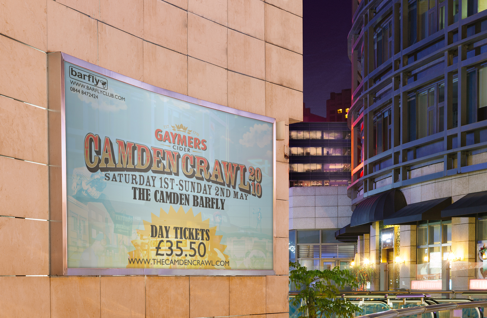
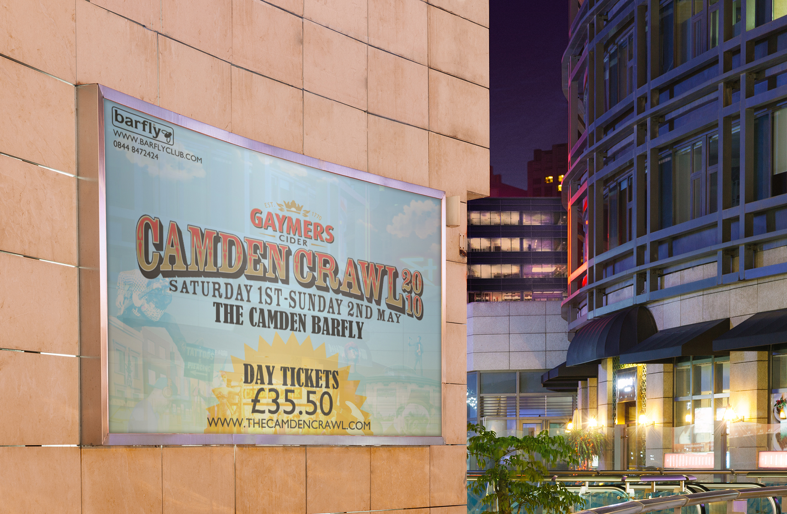

THE BARFLY
When I was a graphic designer at The Camden Barfly I was in charge of the production of visual marketing for live events at the venue, this included print ready designs for promotional posters and also web banners and Internet flyers for events on social media. Here are some examples of some of my design work I did there during my time.

 
